Week 1 · Wednesday 23 September 2026 · 10:00–12:00
AI for Business and FinTech · European School of Economics, Florence
| 10:00 | who I am, and who you are |
| 10:25 | what this course is for |
| 10:43 | open your notebook |
| 10:50 | break |
| 11:00 | a real model release — and the neuron that explains it |
| 11:35 | what the model reads: tokens, attention, the box |
| 11:50 | back to the release · close |
Niccolò Salvini, PhD · Adjunct Professor
| 1–3 | 23 Sep – 7 Oct | a data pipeline, and a model evaluated honestly |
| 4–5 | 14 – 21 Oct | an LLM application: retrieval, tools, evaluations |
| — | 26 Oct | reading week — case brief, 40% |
| 6–8 | 4 – 18 Nov | fintech cases, a backtest, a DeFi analysis |
| 9–10 | 25 Nov – 2 Dec | red-team, and finish the capstone — portfolio, 60% |
| Rev. | 9 Dec | you present it |
| week | the piece |
|---|---|
| 2 | a tokenizer, trained on your own texts |
| 3 | a model that guesses the next character |
| 4 | embeddings it learns by itself |
| 5 | attention, and a tiny GPT trained on central-bank statements |
Small, badly trained on purpose. The point is how, not a good model.
| you wrote | where it lands |
|---|---|
| product and project work | weeks 5 and 10 — and the lens every week |
| data and decisions | weeks 2 and 3 |
| trading | week 7 — market data from week 2 |
| crypto and DeFi | week 8 — on-chain data from week 2 |
Is this still true? What is missing?
| weight | due | |
|---|---|---|
| Case brief | 40% | Sun 1 Nov |
| Portfolio | 60% | Sun 6 Dec |
File ▸ Save a copy in Drive“Each model is a Transformer which leverages mixture-of-experts to reduce the number of active parameters needed to process input. gpt-oss-120b activates 5.1B parameters per token … The models have 117b and 21b total parameters …
We tokenized the data using … o200k_harmony … The models were post-trained … including a supervised fine-tuning stage and a high-compute RL stage. … The weights … are freely available … and come natively quantized in MXFP4. This allows for the gpt-oss-120B model to run within 80GB of memory … Available under the flexible Apache 2.0 license.”
Spec table: context length 128k.
Circle every word you can explain today. By 11:55 you will circle them all.
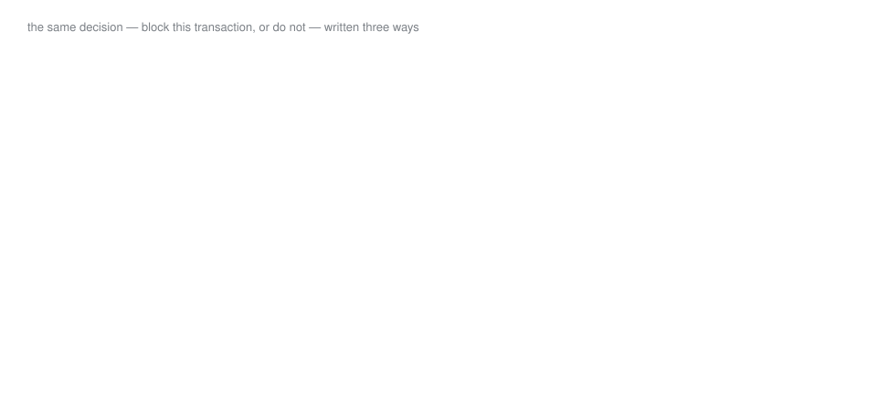
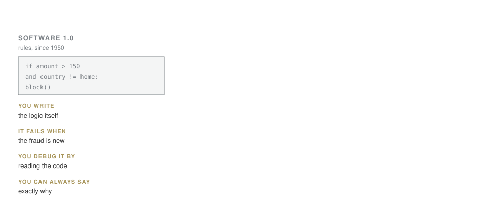
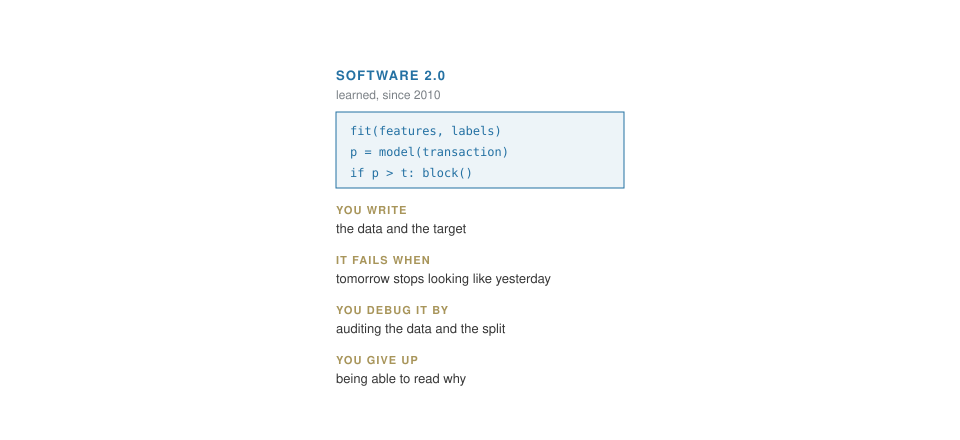
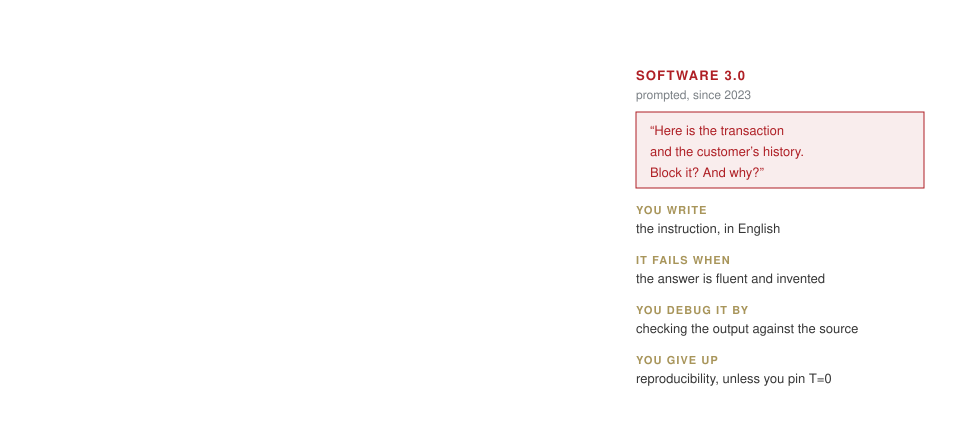
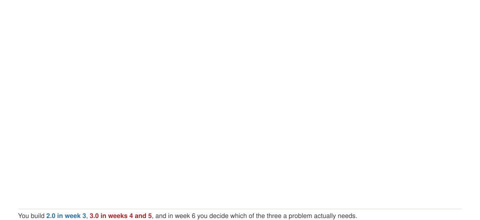
1.0 you write the rule yourself. 2.0 you give examples and the machine learns the rule — as numbers called weights. 3.0 you give an instruction in plain English to a model that has already learned from huge amounts of text. 2.0 and 3.0 are built from the same thing: neurons.
| payment | large? (over €1,000) | abroad? | new device? | fraud? |
|---|---|---|---|---|
| A | 0 | 0 | 0 | no |
| B | 1 | 0 | 0 | no |
| C | 0 | 1 | 0 | no |
| D | 0 | 0 | 1 | no |
| E | 1 | 1 | 0 | yes |
| F | 1 | 0 | 1 | yes |
| G | 0 | 1 | 1 | yes |
| H | 1 | 1 | 1 | yes |
Bet
A first guess: weight 1 on “large”, 0 on the others, bias −1; block if the score is above zero. Which payments does it block?
Three red flags per payment. The hidden truth, which the model is not told: fraud when at least two flags are on.
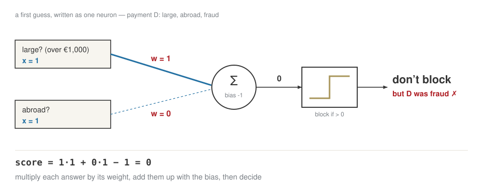
Wrong → move each weight a little towards the right answer; right → leave it. η, the learning rate, is how big each move is.
For every weight, after every mistake:
w_{\text{large}} \leftarrow w_{\text{large}} + \eta\,(\text{fraud} - \text{decision})\cdot \text{large} \qquad \text{bias} \leftarrow \text{bias} + \eta\,(\text{fraud} - \text{decision})
| round | payment | score | decision | fraud | fraud − decision | w large | w abroad | w device | bias |
|---|---|---|---|---|---|---|---|---|---|
| start | 1 | 0 | 0 | −1 | |||||
| 1 | E | 0 | pass | yes | +1 | 1.5 | 0.5 | 0 | −0.5 |
| 1 | G | 0 | pass | yes | +1 | 1.5 | 1 | 0.5 | 0 |
| 2 | B | 1.5 | block | no | −1 | 1 | 1 | 0.5 | −0.5 |
| 2 | C | 0.5 | block | no | −1 | 1 | 0.5 | 0.5 | −1 |
| 2 | G | 0 | pass | yes | +1 | 1 | 1 | 1 | −0.5 |
| 3 | B | 0.5 | block | no | −1 | 0.5 | 1 | 1 | −1 |
| 4 | all 8 right | 0.5 | 1 | 1 | −1 |
Six corrections over three rounds; round 4 makes none. Nobody wrote “two red flags” — the weights found it. And they decided “large” counts half as much as the others. This neuron is the perceptron, 1958.
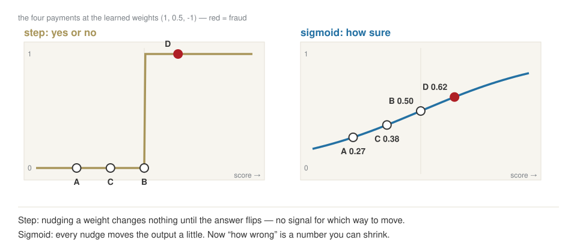
The loss of one payment: small when the model gave the right answer a high probability. The loss of the model: the average over all payments.
| payment | fraud? | p(fraud) | loss = −log p(right answer) | after training: p(fraud) |
|---|---|---|---|---|
| A | no | 0.27 | 0.31 | 0.00 |
| B | no | 0.38 | 0.47 | 0.05 |
| C | no | 0.50 | 0.69 | 0.05 |
| D | no | 0.50 | 0.69 | 0.05 |
| E | yes | 0.62 | 0.47 | 0.96 |
| F | yes | 0.62 | 0.47 | 0.96 |
| G | yes | 0.73 | 0.31 | 0.96 |
| H | yes | 0.82 | 0.20 | 1.00 |
| average | 0.45 | loss 0.03 |
That average is the one number training pushes down: 0.45 at the perceptron’s weights, 0.03 after 200 steps of the formula on the next slide.
w \;\leftarrow\; w - \eta \cdot (p - y) \cdot x \qquad\qquad \text{new weight} = \text{old weight} - \text{learning rate} \times \text{blame}
One step on payment E (large, abroad, fraud), with η = 1:
| w large | w abroad | w device | bias | p(fraud) for E | |
|---|---|---|---|---|---|
| before | 0.5 | 1 | 1 | −1 | 0.62 |
| blame = (p − y)·answer | −0.38 | −0.38 | 0.00 | −0.38 | |
| after (η = 1) | 0.88 | 1.38 | 1.00 | −0.62 | 0.84 |
Same shape as the perceptron rule, with a probability instead of a yes/no. “New device” gets no blame: it was off for E, so it could not have caused the mistake.
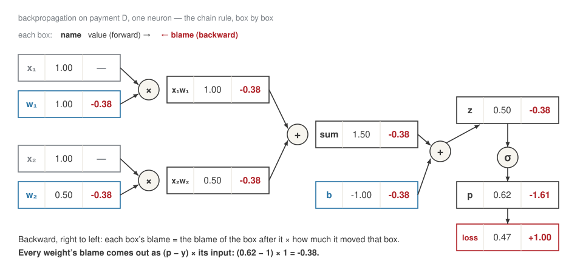
Add payment I — a customer on holiday: large, abroad, genuine — and no rule is perfect any more. Too small a step crawls; too large jumps over the best answer.
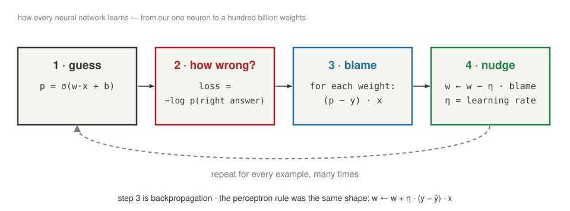
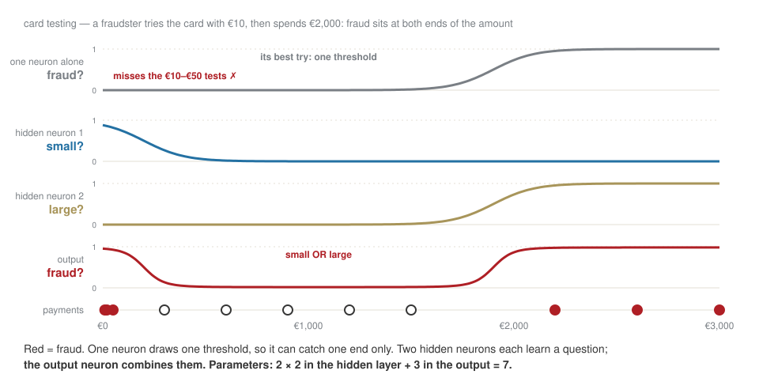
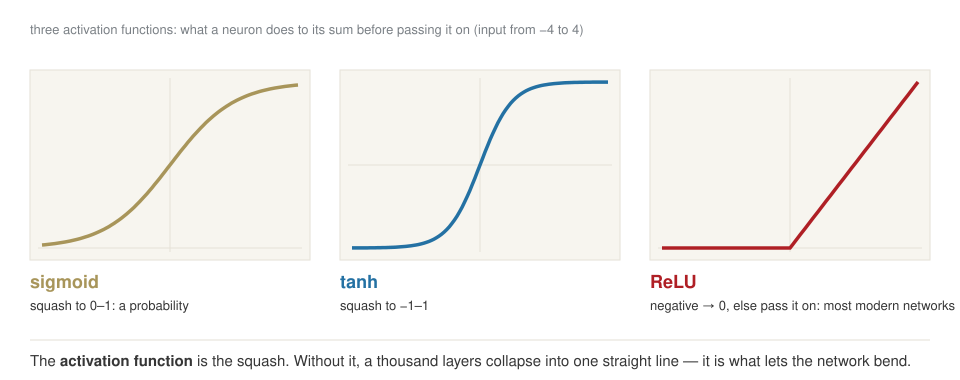
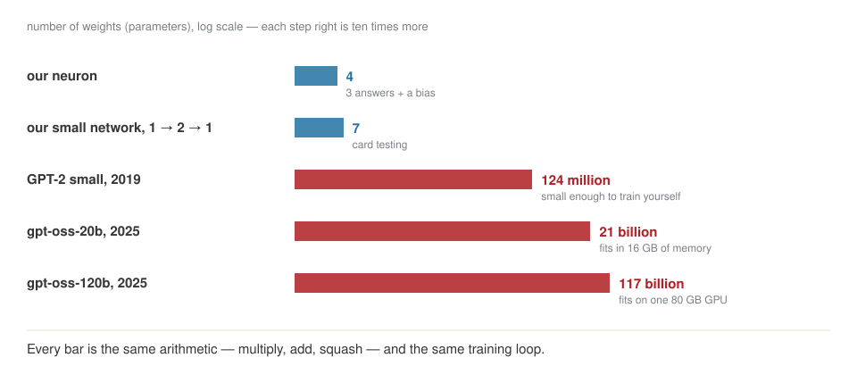
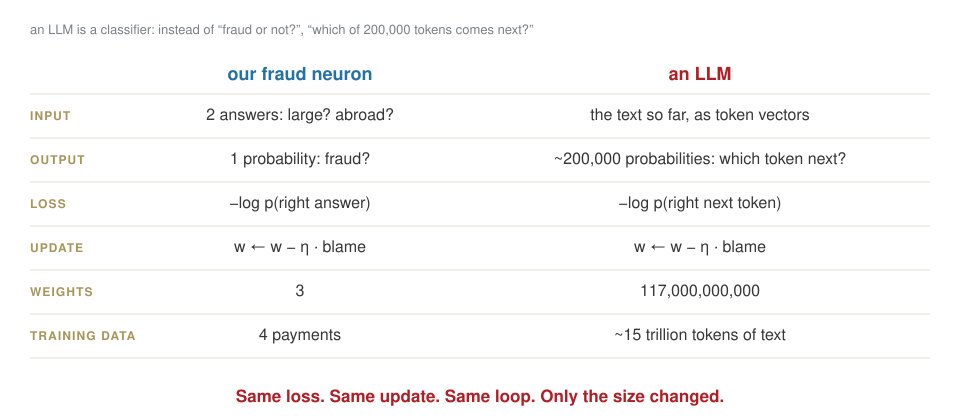
Think of a mixer: one knob per possible next token. Each sentence turns the right knob up a little — exactly the step we took on payment E.
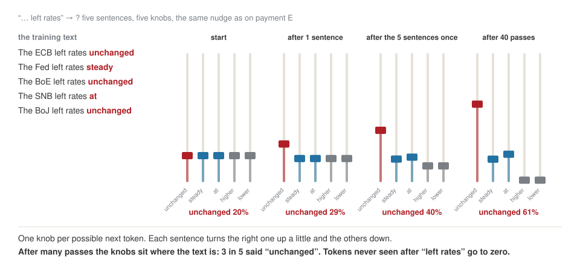
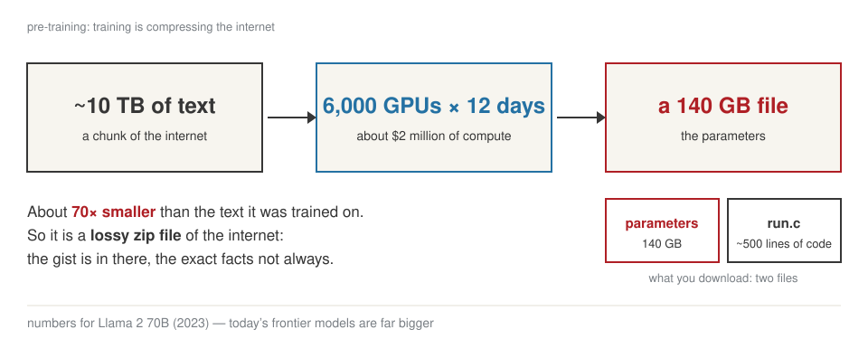
Repeat that nudge on trillions of tokens and the weights end up holding a lossy summary of the text: the gist survives, exact facts do not always.
1 · Pre-training
internet text → a base model that continues documents
2 · Post-training
~100,000 example conversations, then rewards → an assistant
Post-training is the same loop again. Only the examples change: now the right answer is a good reply.
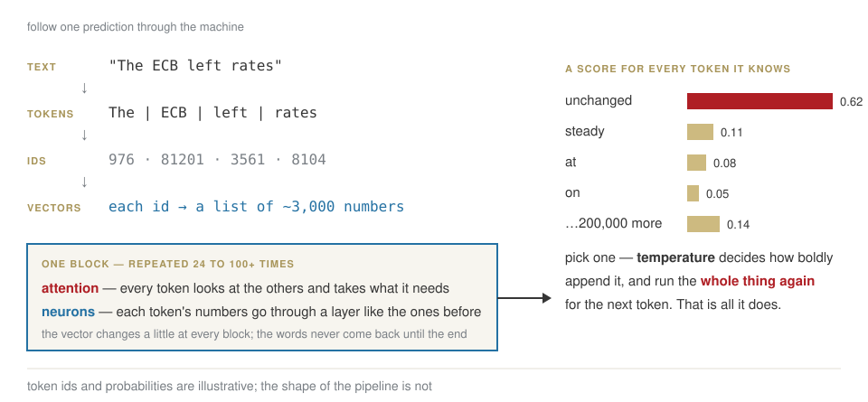
| in the release | in terms of what we just built |
|---|---|
| Transformer | our neurons, plus attention, stacked in 36 layers |
| 117B total parameters | our neuron had 4 numbers (3 weights and a bias); this has 117 billion |
| mixture-of-experts | 128 smaller networks inside; a router picks 4 for each token |
| 5.1B active per token | only those 4 run, so it costs like a 5-billion model |
| tokenized, o200k_harmony | how text becomes numbers before the first neuron |
| post-trained | more rounds of the same training loop, on new data |
| supervised fine-tuning | the loop, where the right answers are good conversations |
| RL | the loop, where the “right answer” is a reward score |
| context length 128k | how many tokens go in at once — a few hundred pages |
| quantized, MXFP4, 80GB | each weight stored in ~4 bits instead of 16: fits on one GPU |
| open-weight, Apache 2.0 | you download the weights themselves, and may use them commercially |
Bet
"Il margine è insostenibile" — four words. How many pieces?
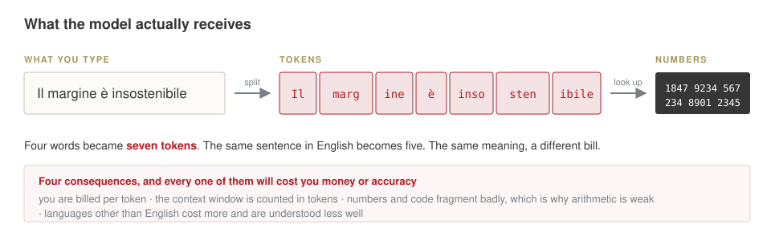
Before the network sees anything, a tokenizer cuts the text into pieces and turns each piece into a number. You are billed, and limited, in these pieces — not in words.
Bet
“The bank raised rates because it feared inflation.” — what is it?
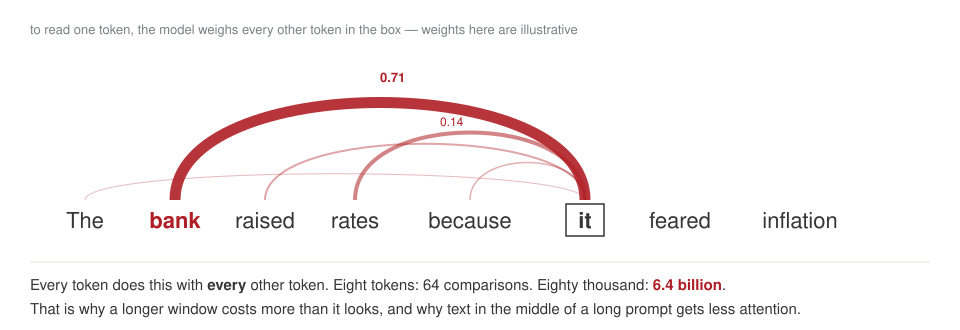
Vaswani et al., Attention Is All You Need, 2017 — the paper behind every model since.
To process each token, the model looks at every other token in the context and decides how much each one matters — here, most of the weight goes to “bank”. Every token does this with every other one, which is why long contexts get expensive.
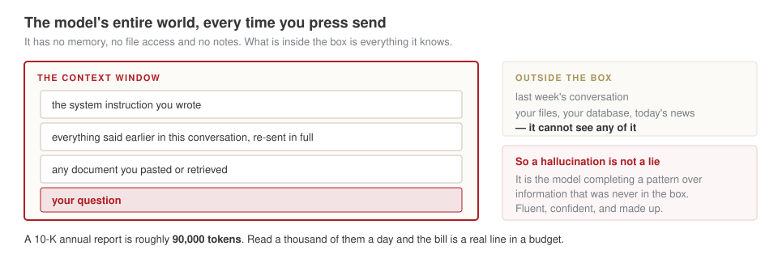
The context window is everything the model sees in one call: instructions, conversation so far, documents, its own answer. Nothing else exists for it. It has no memory between calls — any “memory” is text re-sent by the application.
Read it again. Which words are still dark?
Homework 1, due Tue 29 Sep:
ese-ai-fintech, shared with me — see SetupQuestions: WhatsApp or Telegram.
LAB · session.ipynb § B1 — tiktoken
1,234,567.89Bet
A pool holds 10 ETH and 30,000 USDC — 3,000 per ETH on screen. You buy 1 ETH. What do you pay?
ETH × USDC stays constant: 10 × 30,000 = 300,000.
9 ETH left → 300,000 ÷ 9 = 33,333 USDC → you paid 3,333, 11% above the screen.
| the same 5,000 characters, as | length | alphabet |
|---|---|---|
| bits | 40,000 | 2 |
| bytes | 5,000 | 256 |
| tokens | ~1,300 | ~100,000 |
The network reads a sequence, and longer sequences cost more to process. Letters would make every text very long; whole words would need an impossible vocabulary. Pieces are the compromise: about 1,300 of them for 5,000 characters.
Merge the most frequent pair. Repeat.
| step | text | new symbol |
|---|---|---|
| start | aaabdaaabac |
|
| 1 | ZabdZabac |
Z = aa |
| 2 | YbdYbac |
Y = Za |
| 3 | XdXac |
X = Yb |
11 symbols → 5. Train it on English, and it learns English pieces.
This is byte-pair encoding: find the pair of symbols that appears most often, give it a new name, repeat. On English text the frequent pairs are English, so English ends up with long pieces and other languages with short ones — more pieces, higher cost.
| it struggles with | because |
|---|---|
| spelling a word backwards | the word is one token, not letters |
| Russian, Italian | more, smaller pieces |
| arithmetic | 1,234,567.89 is 7 arbitrary pieces |
egg · Egg · EGG |
the same word, different pieces |
Many failures that look like stupidity come from the model seeing pieces, not letters or digits. When an answer involves spelling, counting characters or arithmetic, check it yourself.
AI for Business & FinTech · ESE Florence